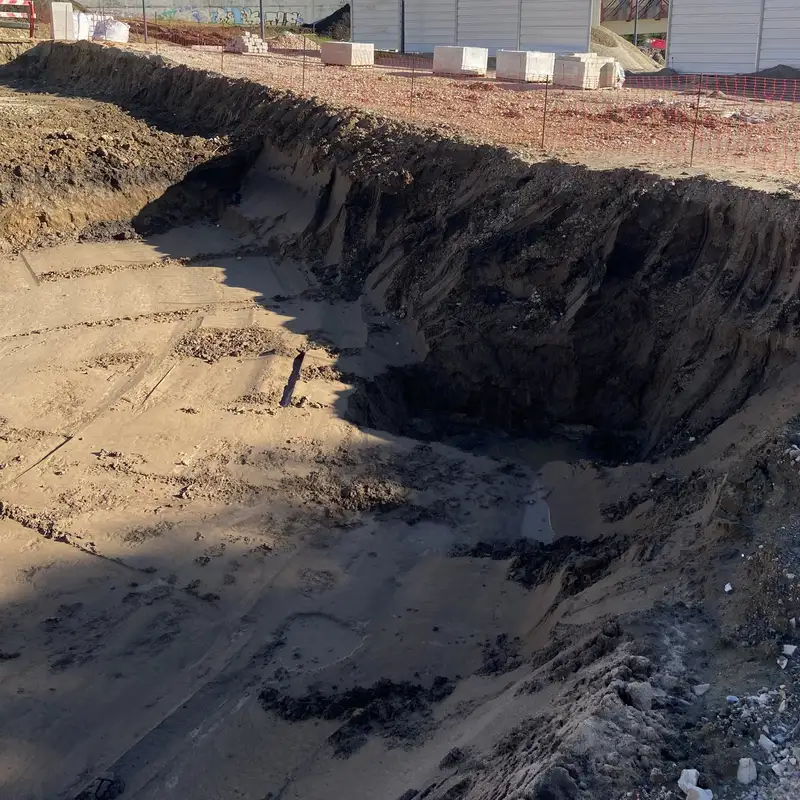
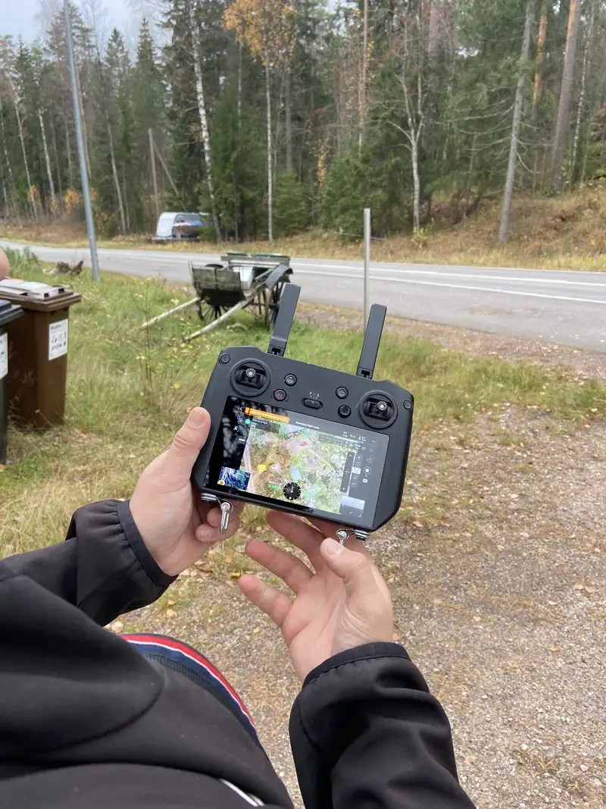

01
Capturar
Fotos normales de obra con un móvil, una cámara o un dron, tomadas en coordenadas de su plano. Sin hardware especial.
Prototipo funcional / Próximo paso: prueba en obra
WorkGuardAI lee el plano DWG que ya tiene y mide el avance de los movimientos de tierra a partir de fotos normales de obra, punto por punto. El prototipo funciona con el plano y las imágenes de un proyecto real. Ahora buscamos la primera obra piloto.

01 · Cómo funciona
Fotos normales de obra con un móvil, una cámara o un dron, tomadas en coordenadas de su plano. Sin hardware especial.
En cada foto nueva se mide el cambio de píxeles y de color en su coordenada del plano.
El avance se compara automáticamente con el plano DWG que el contratista ya tiene.
El avance se actualiza por coordenada, con alertas por correo sobre avances, paradas y desviaciones.
Concepto ilustrativo con datos de ejemplo. Prototipo funcional; prueba en obra pendiente. Exploramos a continuación: GPS de cámara y LiDAR para mayor precisión.
02 · El prototipo
El prototipo se ha demostrado con un archivo DWG real y fotos reales de obra. Todavía no ha funcionado en una obra en curso. La primera prueba en obra es el siguiente paso.
Interfaz del prototipo, probada con el plano y las imágenes de un proyecto real. Próximo paso: prueba en obra.
03 · Para quién es
Ya tiene el plano DWG. WorkGuardAI lo usa para mostrar cuánto han avanzado la excavación y el movimiento de tierras en cada punto, a partir de fotos que su equipo puede tomar en una visita normal a la obra.
Ayuntamientos y organismos que encargan carreteras, redes de servicios y obras públicas pueden seguir el avance de cada punto frente al plano aprobado, medido a partir de fotos de obra.
04 · Quiénes somos
WorkGuardAI se fundó en Finlandia en 2024. El equipo trabaja desde seis países europeos, cerca de los contratistas y propietarios públicos que usarían el producto.

05 · Reconocimientos
Evento Sauna Pitching: seleccionada como una de las dos mejores presentaciones.
Anuncio en LinkedIn (se abre en una pestaña nueva)Seleccionada entre varios candidatos por sus ideas innovadoras.
Anuncio en LinkedIn (se abre en una pestaña nueva)Destacada en la sección Secret Seeds.
Leer el artículo (se abre en una pestaña nueva)CON EL APOYO DE [TODO: list only the supporters Endrit has confirmed in writing]
06 · Equipo
07 · Piloto
Buscamos la primera obra en curso. Si gestiona trabajos de movimiento de tierras o infraestructura y tiene los planos DWG, basta una llamada breve para ver si encaja un piloto.
Para socios tecnológicos, de topografía y de construcción, y para organismos de financiación, ciudades, universidades e inversores que apoyan la tecnología europea de construcción en sus primeras fases.
ek@workguardai.com